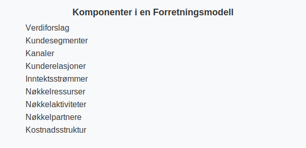

En forretningsmodell beskriver hvordan en virksomhet skaper, leverer og fanger verdi. En grundig forretningsmodell gir et solid grunnlag for strategisk planlegging, forretningsplanlegging og regnskapsføring.
En robust forretningsmodell legger også grunnlaget for innovasjon; se vår artikkel om Innovasjon.
Seksjon 1: Hvorfor er forretningsmodell viktig?
Å ha en tydelig forretningsmodell hjelper deg å:
- Forstå kundeforventninger og markedsbehov
- Identifisere lønnsomme inntektsstrømmer og kostnadsdrivere
- Legge til rette for effektiv ressursallokering
- Bygge et robust beslutningsgrunnlag for regnskap og budsjetter
Seksjon 2: Kjernekomponenter i en forretningsmodell
En forretningsmodell består vanligvis av følgende hovedkomponenter:
| Komponent | Beskrivelse |
|---|---|
| Verdiforslag | Hva virksomheten tilbyr kundene og hvilken verdi den skaper |
| Kundesegmenter | Hvilke kundegrupper virksomheten retter seg mot |
| Kanaler | Hvordan virksomheten leverer verdi til kundene |
| Kunderelasjoner | Hvordan virksomheten etablerer og opprettholder kundeforhold |
| Inntektsstrømmer | Hvordan virksomheten tjener penger |
| Nøkkelressurser | Viktige eiendeler som kreves for å levere verdiforslaget |
| Nøkkelaktiviteter | Viktigste aktiviteter som kreves for å levere verdiforslaget |
| Nøkkelpartnere | Partnere og leverandører som støtter virksomhetens drift |
| Kostnadsstruktur | Oversikt over de viktigste kostnadselementene |

Seksjon 3: Forretningsmodellens rolle i regnskap
I regnskapssammenheng kan en god forretningsmodell bidra til å:
| Fordel | Forklaring |
|---|---|
| Klare forutsetninger | Gir grunnlag for budsjetter og prognoser |
| Risikoidentifisering | Hjelper med å identifisere økonomiske usikkerheter |
| Ressursallokering | Bedre styring av investeringer og kostnader |
| Inntekts- og kostnadskontroll | Støtter føringer for regnskapsføringen |
Seksjon 4: Fra forretningsidé til forretningsmodell og forretningsplan
En vellykket utvikling av virksomheten følger ofte disse trinnene:
- Definer en klar forretningsidé
- Utform en robust forretningsmodell
- Utarbeid en detaljert forretningsplan
- Implementer og følg opp gjennom regnskap
Ved å følge disse stegene sikrer du en helhetlig tilnærming der forretningsmodell, planlegging og regnskapsføring henger sammen.
Seksjon 5: Oppsummering
En forretningsmodell er et kraftig verktøy for å forstå og styre hvordan virksomheten skaper verdi og hvordan dette reflekteres i regnskapet. Ved å definere kjernekomponentene og kontinuerlig evaluere modellen, legger du grunnlaget for bærekraftig vekst og solid økonomistyring.